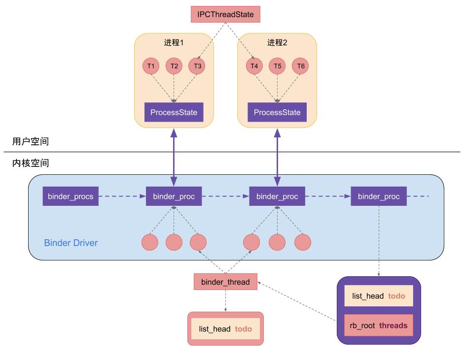

Android-Binder
Android-Binder
1. Linux跨进程通信
1.1 内核态与用户态
为了保障操作系统最基本的运行不受其他应用的影响，Linux 将内存分为内核空间和用户空间：
- 内核空间可以调用所有系统资源、执行任何指令，执行内核代码时，CPU 特权等级处于最高的 0，此时 CPU 处于内核态。
- 用户空间只支持简单运算，不能直接调用系统资源，执行用户代码时，CPU 特权等级处于最低的 3，此时 CPU 处于用户态。
用户空间想要调用部分系统资源则必须通过 SysCall 向内核空间发送指令由内核空间完成。SysCall 可以理解为，内核空间向外暴露的接口，SysCall 预先定义了一套允许用户空间发送的指令，并根据这些指令执行具体的系统命令。
用户空间可以借助 SysCall 向内核空间发送命令，如果多个用户空间之间需要通信，则需要借助内核空间完成交互。传统的 Linux 通信机制，例如 Socket 和管道，都是内核原生支持的，而 Binder 并不是 Linux 内核的一部分，而是通过 Linux 的动态可加载内核模块（Loadable Kernel Module, LKM）链接到 Linux 的内核中。LKM 允许独立编译但不允许独立运行，其运行时会被链接到内核作为内核的一部分运行于内核空间，因此用户空间不同进程之间就可以通过 Binder 通信。
在与 ServiceManager 和 Binder 通信的过程中，Client 和 Service 会发送多条命令，其中 Client 发起的请求命令称为 BC（Binder Client）命令；Service 响应的命令称为 BR（Binder Reply）命令。
1.2 Linux中的驱动
Linux 把硬件的读写抽象为文件 IO，而驱动就是对这个抽象的封装和实现。Linux 中有三种类型的驱动设备：字符设备、块设备、网络设备。
- 字符设备是指能像字节流文件一样被访问的设备，对字符设备 IO 时，硬件也同时进行 IO。例如显示屏、键盘、串口、LCD、LED 等。
- 字符设备中有一个比较特殊的 misc 杂项设备，设备号为 10，可以自动生成设备节点。Binder 就属于 misc 杂项设备。
- 块设备是指通过传输数据块（一般为 512b 或 1k）来访问的设备，例如硬盘、SD 卡、U 盘、光盘等。
- 网络设备是指能和其他主机交换数据的设备，例如网卡、蓝牙等。
1.3 Binder驱动
Binder 驱动并没有真正建立硬件 IO，而是借助驱动的方式，通过内存映射 mmap() 实现进程间通信。
跨进程无法直接通信的原因是，不同进程之间的内存不可见，因此两个进程无法直接操作另一个进程的内存。通常 Client 进程向 Service 进程请求通信时，需要先将 Client 的请求数据拷贝到内核区，然后再从内核区拷贝到 Service，造成两次数据拷贝，效率较低，因此 Binder 采用了内存映射 MemoryMap 的方式，仅用一次拷贝实现进程间通信：
- 使用 Binder 进行进程间通信时，Binder 驱动在内核创建一个数据接收缓冲区，然后在内核开辟一块内核缓冲区，并建立两个缓冲区之间的映射关系、以及 Service 用户空间中一块内存地址与数据接收缓冲区的映射关系；相当于此时 Service 的一块用户内存直接映射到了内核中的数据接收缓冲区。
- 将 Client 的数据拷贝到内核中的内核缓冲区，由于内核缓冲区与数据接收缓冲区存在映射关系，而数据接收缓冲区又与 Service 的一块用户内存存在映射关系，所以 Service 就能通过映射，直接操作内核缓冲区中来自 Client 拷贝的数据。
- 当 Service 处理完毕，对 Client 响应时，就会重复上述过程，只不过这时反过来，请求时的 Client 变为了响应时的 Service，请求时的 Service 变为了响应时的 Client。
2. ServiceManager
Android 基于 Linux 的系统，因此 Android 的系统运行也需要遵循 Linux 运行的基本原则。Linux 系统在启动时，第一启动的进程就是 init.c：
- 启动
init进程，进入 Linux 系统的第一步。 - 启动各类基础服务，包括 Zygote 和 ServiceManager 等。
- Zygote 启动 SystemService，SystemService 又会分裂出不同的系统服务，包括 ActviityManageService、PackageManageService 等，这些 SystemService 处于同一进程内，所以不同 SystemService 之间是可以互相访问甚至互相持有的。
- ServiceManager 启动 Binder 进程，并初始化 Binder 驱动。
- ServiceManager 将自己存入 Binder 驱动中的第 1 个 ServiceNode，并将自己设为 Binder 的守护进程。
- Binder 开始处理 C/S 进程通信。
2.1 ServiceManager启动
ServiceManager 启动后，在 main 函数中对 Binder 和 Binder 驱动做了初始化：
- 调用
binder_open()打开 Binder 驱动；- 这一步还会在 Binder 内创建一个全局链表
binder_procs，并且将 ServiceManager 自己存入到第一个binder_proc节点，也即序号为 0。 - 由于 ServiceManager 也是一个独立进程，所以其他 Service 和 ServiceManager 通信本身又涉及到进程间通信；
- 因此 ServiceManager 存放在
binder_procs的 0 号节点，Binder 自动为其创建一个 Binder 实体，这样任何 Service 都可以通过 0 号引用从 Binder 中获取到 ServiceManager。
- 这一步还会在 Binder 内创建一个全局链表
- 调用
binder_become_context_manager()设为 Binder 进程的守护进程； - 调用
binder_loop开启 Binder 循环，Binder 循环会不断执行binder_parse()轮询 BR_XXX 命令。
2.2 ServiceManager注册和查找服务
ServiceManager 有两大主要功能：注册服务和查找服务。
（1）Service 启动后通过 ServiceManager 注册服务 do_add_service()：
ServiceManager 向 Binder 发送 BC_TRANSACTION 命令，携带 ADD_SERVICE_TRANSACTION 命令，同时注册服务的线程进入阻塞等待状态。
Binder 驱动收到命令后，向 ServiceManager 的 todo 队列中添加一条事务，事务的内容就是创建服务端进程 binder_node，并插入到 binder_procs 链表中。
Binder 处理完后，向 ServiceManager 发送 BR_TRANSACTION 命令，ServiceManager 收到后向已注册服务列表 svclist 中写入对应的信息 ServiceInfo，并发送 BR_REPLY 命令唤醒阻塞等待的线程。
每个 Service 启动时会创建一个 Binder 线程池，并向其中注册一个线程。Binder 线程池默认上线为 16 个，当 Client 调用 BinderService 处理事务时，都是通过添加到 Service 的线程池处理的：

（2）其他进程通过 ServiceManager 查找服务 do_find_service()：
- ServiceManager 在 Java 层有一个 HashMap 的缓存，缓存了所有被获取过的 Service，如果命中了缓存就会直接返回。
- 否则 ServiceManager 向 Binder 发送 BC_TRANSACTION 命令，携带 CHECK_SERVICE_TRANSACTION 命令，同时获取服务的线程进入阻塞等待状态。
- Binder 驱动收到命令后，向 ServiceManager 发送 BC_TRANSACTION 命令，优先从已注册服务列表 svclist 中查找；
- 如果 serviceInfo 中存在则直接响应 BR_REPLY 并唤醒阻塞等待的线程。
- 如果不存在，则向 binder_procs 链表中插入一条事务进行通信，事务执行后再返回响应。
3. Binder机制的安全性
Binder 作为 Android 中大量使用的 IPC 机制，不仅提供了 App 之间的通信能力，还提供了 App 与系统服务之间的通信能力，因此 Binder 需要一套安全机制来确保两个进程在通信时的行为是可控的、数据是合法的，否则一个恶意进程可以通过伪造信息来模仿正常进程的行为，导致系统异常。在 Binder 机制中，从底向上一共有 3 层防护机制来确保通信双方进程以及涉及数据的安全性：
- Linux 进程信息验证
- SEAndroid 权限机制
- ServiceManager 守护
3.1 Linux进程信息验证
Linux 原生的 IPC 记录了进程的基本信息，可以通过 UID 或 PID 获取调用方和被调用方的进程，但也仅仅只有记录的功能，Linux 原生 IPC 并没有对这些信息做安全校验。
3.2 SEAndroid权限机制
由于原生的 IPC 机制对于数据安全性没有校验，因此 Android 提供了 SELinux 模块，用于控制系统运行时敏感操作的权限。SELinux 中定义了 4 个敏感操作：
call: 是否允许 Client 请求 Service 通信。transfer: 是否允许 Client 向 Service 传输 Binder 对象或文件描述符 FD。set_context_mgr: 是否允许进程注册为 ContextManager。impersonate: 是否允许进程代理另一个进程的通信请求（例如进程 A 请求进程 B，然后 B 携带 A 的数据向进程 C 请求通信，实际上 Android 没有出现这种情况，所以该权限实际上没有被用到）。
SEAndroid 中定义了多个具有不同权限的安全策略 Domain，其中有一个 unconfineddomain 具有上述的 call、transfer、set_context_mgr 权限。在原生 Linux 中，进程是通过 SysCall exec 将可执行文件加载生成的，但在 Android 中，系统首先加载 /system/bin/app_process 生成 Zygote 进程，之后所有的 SystemService 和 App 进程都是由 Zygote Fork 出来的，由于 Zygote 具有 unconfineddomain 策略，因此 App 进程和 SystemService 都具有同样的 SELinux 权限。
Client 进程对 Service 的请求都需要经过 Binder 驱动的 binder_transaction 处理，其中参数 reply 表示当前处理的事务类型：
- 当
reply == false时表示 Binder 正在处理的是 Client 向 Service 的请求，此时binder_transaction就需要检查 Client 是否有权限请求 Service。 - 当
reply == true时表示 Binder 正在处理的是 Service 返回 Client 的数据，此时binder_transaction就不需要检查权限。
上文提到，ServiceManager 初始化 Binder 驱动后，会将自己注册为第 1 个 ServiceNode，因此 ServiceManager 本身也是一个 BinderService，从而 App 可以通过 ServiceManager 获取其他的 SystemService。因此当一个 Client 尝试请求 Service 时，先从 Binder 驱动中找到 ServiceManager，然后向 ServiceManager 获取目标 Service 的描述 binder_transaction_data 结构体，该结构体的整型成员变量 target.handle 就是指向目标 Service 对应 Binder 的句柄。
对于 ServiceManager，其
target.handle == 0，对于其他 Service，target.handle != 0。
因此 Client 通过 Binder 请求 Service 的流程大致如下：
- Client 通过 Binder 驱动中找到下标为 0 的 BinderNode，对应的即为 ServiceManager
- Client 请求 ServiceManager 根据 Service 名获取 TargetService 对应的 Binder 对象的句柄
target.handle - ServiceManager 找到后将
target.handle存入结构体binder_transaction_data - ServiceManager 调用 Binder 驱动的
binder_transaction函数，传入 Client 的进程信息、描述 Service 对应 Binder 的句柄的结构体binder_transaction_data等信息 - Binder 驱动调用
binder_get_ref函数获取 TargetService 进程的 Binder 对象的引用ref - Binder 驱动通过
ref.node获取 TargetService 进程的 Binder 实例对象 BinderNode - Binder 驱动通过
BinderNode.proc获取用于描述 TargetService 进程的结构体proc - Binder 驱动通过
proc.tsk获取 TargetService 进程的结构体task_struct，其中包含了 TargetService 的进程信息，以及安全上下文信息 - Binder 驱动调用
security_binder_transaction函数，根据通信双方进程的安全上下文信息（当前进程的安全上下文 mysid、发起调用的进程的安全上下文 fromsid、目标进程的安全上下文 tosid）校验权限：- 如果
mysid != fromsid，则需要首先校验 fromsid 是否具有impersonate权限。上文提到，由于 Android 不存在代理进程通信，因此实际上 mysid 总是等于 fromsid。 - 校验 Client 进程是否具有请求 Service 的权限
call，由于所有 Zygote Fork 出来的进程都具有unconfineddomain安全策略，因此 Client 也具有call权限。 - 校验 Client 是否具有传输 Binder 的权限
transfer，因为 Client 有可能会传输一个 Binder 对象给 Service 调用。同样由于具有unconfineddomain安全策略，因此 Client 也具有transfer权限。 - 校验 目标进程 TargetService 是否具有 FD 权限，这一步与上面有区别。文件描述符 FD 用于描述一个文件，FD 包含了该文件的信息、指针等，可以理解为持有一个文件的 FD 即可操作该文件。由于 IPC 时可能会传递文件描述符 FD，因此为了避免一个拥有权限的进程获取到 FD 后就无限制传递给其他进程，就需要校验 目标进程 是否具有使用该 FD 的权限。
- 上述校验过程中如果出现任何越权情况，都会抛出异常。
- 如果
Binder 驱动通过上述流程，严格控制了通信双方进程对数据的访问是在操作系统的监控下进行的，保障了通信的安全性。
3.3 ServiceManager守护
上文提到，Binder 驱动严格控制了通信双方进程的权限，因此保障了通信的安全性，但是 Binder 进程的启动以及 Binder 驱动的初始化都是由 ServiceManager 处理的，而如果 ServiceManager 被篡改，仍然有可能导致数据安全性问题。
在 SELinux 模块中，Android 对注册 ServiceManager 也校验了 set_context_mgr 权限，但是由于 Zygote Fork 出来的进程与 ServiceManager 一样都具有 unconfineddomain 安全策略，因此也都会具有 set_context_mgr 权限，所以 Android 还采用了单例互斥的方式保障 ServiceManager 的安全：
- ServiceManager 启动时，会启动 Binder 进程以及调用
binder_ioctl函数初始化 Binder 驱动，并且将 ServiceManager 自己的进程信息proc传入 binder_ioctl函数初始化 BinderNode 链表，创建第一个 BinderNode 并存入 ServiceManager，然后用一个全局静态指针binder_context_mgr_node指向这个 BinderNode当其他用户进程获取 ServiceManager 时，实际上 Binder 驱动也是直接返回该指针。
- 每当有进程尝试注册 ContextManager 时都会判断，如果
binder_context_mgr_node != null则禁止注册 - 由于 ServiceManager 与 Zygote 都是在
init进程中创建的，因此用户进程将无法篡改 ServiceManager，保护的逻辑类似于 ClassLoader 的双亲加载模型。
4. 选择Binder的理由
Android 的 IPC 方式按照系统支持分为两大类：
- 内核原生支持的：管道、消息队列、Socket、共享内存
- Android 扩展的：Binder
4.1 管道
管道的通信原理是文件 IO，读与写都可以看作对管道文件的读写，分为匿名管道和命名管道两种：
- 匿名管道（Pipe）：匿名管道的管道文件是存在内存中的一种特殊文件，因此只能在父子进程或兄弟进程间通信，仅支持半双工通信，而且是非永久性通信机制，通信双方进程均销毁后，则 Pipe 也会自动销毁。典型的使用方式是：A 进程调用 pipe 创建一个管道并持有描述符
fd0， fd1分别指向管道文件的读端和写端，然后 Fork 出 B 进程同样持有描述符fd0, fd1，根据希望的数据流向决定 Pipe 的操作：- 如果希望从 A 写入、从 B 读出，则 A 关闭读端
fd0、B 关闭写端fd1，使得fd0和fd1的引用计数都为 1，然后开始通信。 - 如果希望从 B 写入、从 A 读出，则 A 关闭写端
fd1、B 关闭读端fd0，使得fd0和fd1的引用计数都为 1，然后开始通信。
- 如果希望从 A 写入、从 B 读出，则 A 关闭读端
- 命名管道（FIFO）：命名管道的管道文件是真实存在文件系统中的文件，因此可以在任意两个能访问该文件的进程间通信，支持半双工或全双工，而且是永久性通信机制。FIFO 的读取总是从头部开始，写入总是追加到尾部。
管道通信中每一次数据传输都需要内核两次拷贝。
4.2 消息队列
消息队列的原理是缓冲区，在内核中创建一块内存（由唯一的 qid 标识）用于存放通信的消息，但消息可以是不同类型，写入时将消息写入尾部，读取时可以按照消息类型读取而不一定遵循 FIFO。消息队列位于内核中的一块内存区域，独立于通信双方进程，因此相比于 Pipe 或 FIFO，可以避免通信双方进程在同步和阻塞上的问题。
消息队列在消息的传输效率上优于管道，但仍然没有避免每一次数据传输都需要内核两次数据拷贝。
4.3 Socket
Socket 本质上只是对具体协议的封装，并不参与实际的数据传输和编解码，因此 Socket 跨进程通信的原理需要根据其实现协议而定。由于 Socket 通常用于网络通信，因此可以抽象的理解为，Socket 借助了网络层的 IP 协议，由 IP 地址、端口号等唯一标识两个进程，然后通过 TCP 或 UDP 等传输层协议实现具体的通信过程。
4.4 内存共享
内存共享的原理是在内核空间中开辟一块内存，并将这块地址映射到通信双方进程的虚拟地址空间，则双方进程就能通过操作这块共享内存直接将数据同步给对方，而不需要内核两次数据拷贝，内存共享极大提高了数据传输的效率，但是内存共享使得通信双方进程不再具有 C/S 模型，双方进程以类似互相持有的方式进行通信，使得通信的过程难以在操作系统的控制下进行，因此需要单独管理一套安全机制以保障通信安全性。
4.5 Binder
通过上文可以看出，Linux 原生的 IPC 方式安全则效率低，效率高则不安全，因此 Android 选择了折中的方案：Binder。
Binder 基于 C/S 模型，因此对于 Server 端可以很好的保障其稳定性，并且通过 Binder 驱动的权限机制、ServiceManager 的单例模式等保障了 Binder 机制的安全性。从效率上，由于 ServiceManager 和 SystemService 都经过了安全机制的校验，因此是可信任的，所以在通信时 Binder 在内核中开辟一块内存空间，并其映射到 Service 的虚拟内存空间中，而仅拷贝一次 Client 的数据，很好地结合了安全与高效的有点。
但是，Binder 作为非 Linux 原生支持的 IPC 方式，其启动过程在 ServiceManager 和 Zygote 之后，这就导致在其之前的 IPC 将无法使用 Binder 通信，典型的例子就是 InputManagerService，因为设备输入信号的监听可能发生在 ServiceManager 启动之前，因此 InputManagerService 仍然使用 Socket 与 WindowManagerService 通信。
参考文献
- 一篇文章了解相见恨晚的 Android Binder 进程间通讯机制
- 腾讯面试题——谈一谈Binder的原理和实现一次拷贝的流程
- Binder死磕到底（一）：Linux进程通信和service manager进程
- 说说你对 binder 驱动的了解？
- 为什么 Android 要采用 Binder 来实现 IPC 呢？
- 为什么 Android 要采用 Binder 作为 IPC 机制？
- SEAndroid安全机制对Binder IPC的保护分析
- SEAndroid安全机制中的进程安全上下文关联分析
- Android源码的Binder权限是如何控制？
- Android中Intent/Bundle的通信原理及大小限制（Parcelable原理及与Serializable的区别）